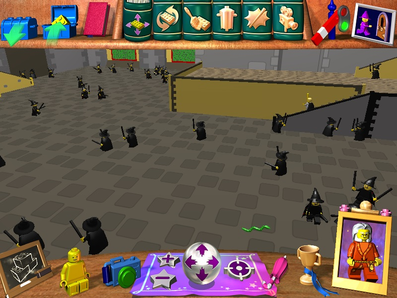

The Internet is Serious Business!
Home > Video Games > PC > Messing Around in Lego Creator: Harry Potter
I bought this game soon after I saw the first Harry Potter movie in theaters back in 2001. Although I have never been a fan of Harry Potter (I saw only the first movie and have never read any of the books), I still enjoyed playing this game very much.
This is a sandbox game in which you can place both pre-made as well as your own custom Lego buildings and minifigures into a handful of different scenes, and then click a button to make everything come alive and begin moving around; there are also other features, such as casting little spells within the game, or taking direct control of minifigures.
Although the designers of the game probably intended it primarily to be a way for kids to construct complex Lego buildings and scenes and thereby explore their creativity, very rarely did I ever do that. I use the phrase messing around
in the title of this page because, most of the time, I would throw a whole lot of random structures, animals, and minifigures into the scene, turn on the simulation, and then laugh the entire time as I witnessed the complete chaos I had created.
The animals and minifigures in this game don't have any real intelligence: they always walk forwards, and might turn left or right a bit at random, but they never see what's directly in front of them, and so will bump into other things in the scene very frequently. Whereas I usually find other video games fun because they are exciting or challenging in some way, with Lego Creator: Harry Potter, the fun for me lies in the hilarity of watching something like 100 minifigures and animals moving about in a scene, constantly (and very stupidly) bumping into a wall, an object, or each other. Although the game places a limit of one minifigure per scene for each of the movie's characters (e.g. there can be only one Harry minifigure in each scene), no such limit exists for any custom minifigures you make; I learned pretty early on that I could flood the scene with clones of my custom minifigures:

The game's pre-made ghost minifigure also does not have any sort of scene limit:
The game also lets you take direct control of minifigures, which is a pretty neat feature. I always liked playing in the scene showing the exterior of Hogwarts, as it was the only scene in the game where I could spawn Lego dragons and then take control of them:
I returned to playing this game many times throughout the 2000s—there were always more laughs to be had with it. The first time I played the game, I did not know how to get to the other scenes, and so the entire time I played only in Diagon Alley, the scene which loads first every time the game is started. I also remember once, during one of my earlier play sessions, I decided to play through the game's challenges
(which are really more like tutorials), and got stuck partway through the Flying Practice
challenge because I didn't know that I had to hold down the Control key in order to move Harry up over the broomstick, and then down onto it; instead, I kept trying to snap him onto the broomstick from the side, which wouldn't work. The Harry minifigure kept bumping into the broomstick, and the entire time the help guy kept repeating the same two sentences over and over, which now has probably been burned into my mind forever (click the image below to hear the audio):
I wasn't bothered by it; I really do like the help guy—he can be quite entertaining at times. Back in the early 2000s, when I played this game on an old computer of mine and I dragged his picture frame rapidly around the screen, it produced an effect very familiar to anybody who has ever used Windows XP:


 All written materials on this Web site are my own, and all are released under the Do What the Fuck You Want to Public License Version 2.
All written materials on this Web site are my own, and all are released under the Do What the Fuck You Want to Public License Version 2.
This page last modified on 28 March 2021.